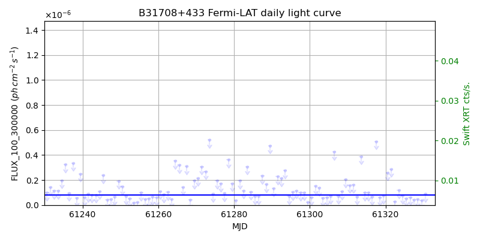
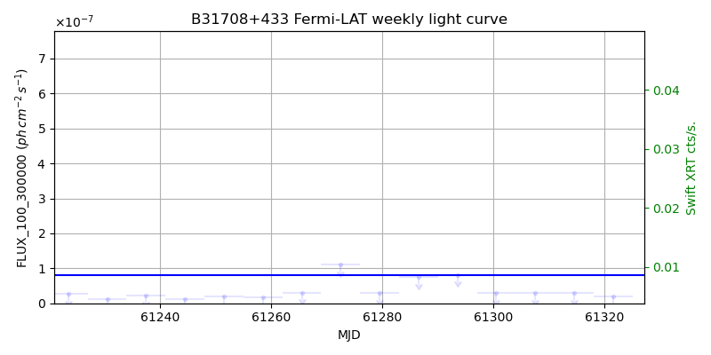
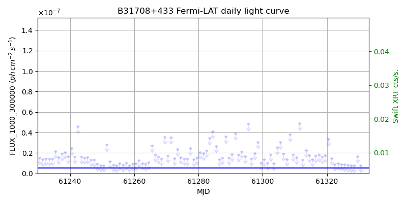
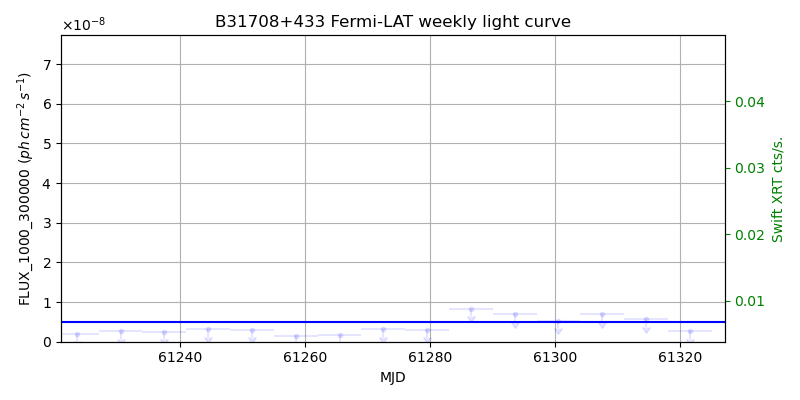

LAT Lightcurve site: https://fermi.gsfc.nasa.gov/ssc/data/access/lat/msl_lc/source/B3_1708p433
Swift site: https://www.swift.psu.edu/monitoring/source.php?source=B31708+433
NED: Query
Time of last update of this page: UT: 2026-10-17 15:23 (MJD: 61330.641)
| Property | Value |
|---|---|
| R.A. | 17:09:41.04 |
| Dec. | 43:18:43.2 |
| z | 1.027 |
| 3FGL SpectrumType | LogParabola |
| 3FGL PL Index | |
| 3FGL Flux_100_300000 | 8.04e-08 1 / (s cm2) |
| 3FGL Flux_1000_300000 | 5.09e-09 1 / (s cm2) |
| 3FGL Flux >200 GeV | 2.40e-12 1 / (s cm2) |
| 3FGL Extrap. Crab >200 GeV | 0.01 |
| 3FGL Flux After EBL Absorption >200GeV | 3.66e-14 1 / (s cm2) |
| 3FGL EBL Crab Fraction >200GeV | 0.00 |

| MJD | dMJD | Flux | dFlux | Frac3FGL | FracCrab>200GeV | EBLFracCrab>200GeV |
|---|---|---|---|---|---|---|
| 61325.50 | 0.50 | 5.26e-08 | 0.00e+00 | 0.00 | 0.00 | 0.00 |
| 61326.50 | 0.50 | 6.27e-08 | 0.00e+00 | 0.00 | 0.00 | 0.00 |
| 61327.50 | 0.50 | 4.23e-08 | 0.00e+00 | 0.00 | 0.00 | 0.00 |
| 61328.50 | 0.50 | 4.85e-08 | 0.00e+00 | 0.00 | 0.00 | 0.00 |
| 61329.50 | 0.50 | 3.88e-08 | 0.00e+00 | 0.00 | 0.00 | 0.00 |

| MJD | dMJD | Flux | dFlux | Frac3FGL | FracCrab>200GeV | EBLFracCrab>200GeV |
|---|---|---|---|---|---|---|
| 61293.50 | 3.50 | 8.15e-08 | 0.00e+00 | 0.00 | 0.00 | 0.00 |
| 61300.50 | 3.50 | 2.96e-08 | 0.00e+00 | 0.00 | 0.00 | 0.00 |
| 61307.50 | 3.50 | 3.01e-08 | 0.00e+00 | 0.00 | 0.00 | 0.00 |
| 61314.50 | 3.50 | 2.90e-08 | 0.00e+00 | 0.00 | 0.00 | 0.00 |
| 61321.50 | 3.50 | 1.91e-08 | 0.00e+00 | 0.00 | 0.00 | 0.00 |

| MJD | dMJD | Flux | dFlux | Frac3FGL | FracCrab>200GeV | EBLFracCrab>200GeV |
|---|---|---|---|---|---|---|
| 61325.50 | 0.50 | 8.81e-09 | 0.00e+00 | 0.00 | 0.00 | 0.00 |
| 61326.50 | 0.50 | 8.35e-09 | 0.00e+00 | 0.00 | 0.00 | 0.00 |
| 61327.50 | 0.50 | 7.65e-09 | 0.00e+00 | 0.00 | 0.00 | 0.00 |
| 61328.50 | 0.50 | 7.58e-09 | 0.00e+00 | 0.00 | 0.00 | 0.00 |
| 61329.50 | 0.50 | 1.68e-08 | 0.00e+00 | 0.00 | 0.00 | 0.00 |

| MJD | dMJD | Flux | dFlux | Frac3FGL | FracCrab>200GeV | EBLFracCrab>200GeV |
|---|---|---|---|---|---|---|
| 61293.50 | 3.50 | 6.86e-09 | 0.00e+00 | 0.00 | 0.00 | 0.00 |
| 61300.50 | 3.50 | 5.32e-09 | 0.00e+00 | 0.00 | 0.00 | 0.00 |
| 61307.50 | 3.50 | 6.96e-09 | 0.00e+00 | 0.00 | 0.00 | 0.00 |
| 61314.50 | 3.50 | 5.69e-09 | 0.00e+00 | 0.00 | 0.00 | 0.00 |
| 61321.50 | 3.50 | 2.69e-09 | 0.00e+00 | 0.00 | 0.00 | 0.00 |
--------------------------------------------------------- Using user-supplied coords: 17:09:41.04 43:18:43.2 2000 --------------------------------------------------------- FLWO UT night of: 2026-10-18 Local Sid. @ Midnight: 01:23 Sunset (-15.0) (local, UT): 18:56 01:56 Sunrise (-15.0) (local, UT): 05:22 12:22 Moonrise (local, UT): Moonset (local, UT): 22:59 05:59 Moon phase: 0.47 --------------------------------------------------------- AzTime LSID UT Obj_el Obj_az Mn_el Mn_az Sep. --------------------------------------------------------- 18:56 20:18 01:56 51.5 301.2 30.5 195.3 75.6 19:26 20:48 02:26 46.0 301.4 28.5 202.5 75.6 19:56 21:18 02:56 40.6 302.2 25.9 209.3 75.6 20:26 21:48 03:26 35.2 303.4 22.6 215.6 75.6 20:56 22:19 03:56 29.9 305.1 18.8 221.3 75.6 21:26 22:49 04:26 24.7 307.1 14.5 226.6 75.6 21:56 23:19 04:56 19.7 309.4 9.9 231.4 75.6 22:26 23:49 05:26 14.9 312.1 5.0 235.7 75.6 22:56 00:19 05:56 10.3 315.1 0.2 239.8 75.6 23:26 00:49 06:26 5.9 318.4 -5.5 243.5 75.6 23:56 01:19 06:56 2.0 322.0 -11.3 247.0 75.6 00:26 01:49 07:26 -1.2 326.0 -17.0 250.4 75.6 00:56 02:19 07:56 -5.1 330.3 -22.8 253.6 75.6 01:26 02:49 08:26 -8.4 334.9 -28.7 256.7 75.6 01:56 03:19 08:56 -10.9 339.9 -34.7 259.8 75.7 02:26 03:49 09:26 -12.8 345.1 -40.7 263.0 75.7 02:56 04:20 09:56 -14.2 350.6 -46.8 266.4 75.8 03:26 04:50 10:26 -14.9 356.2 -52.8 270.1 75.8 03:56 05:20 10:56 -15.0 1.8 -58.9 274.3 75.9 04:26 05:50 11:26 -14.5 7.5 -64.9 279.6 76.0 04:56 06:20 11:56 -13.4 13.0 -70.8 287.0 76.1 05:22 06:46 12:22 -11.9 17.6 -75.7 297.1 76.1 --------------------------------------------------------- Dark hours >55 deg.: 0.00